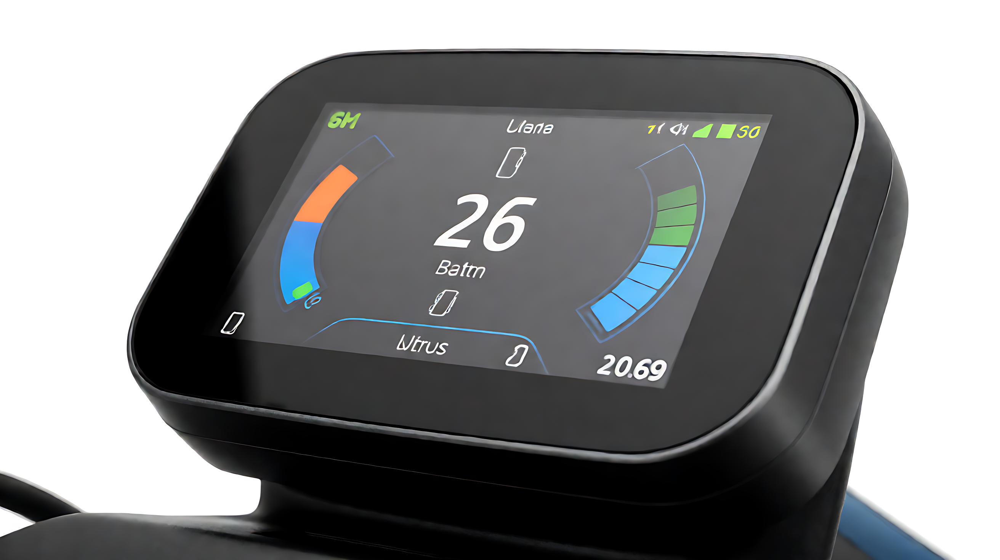
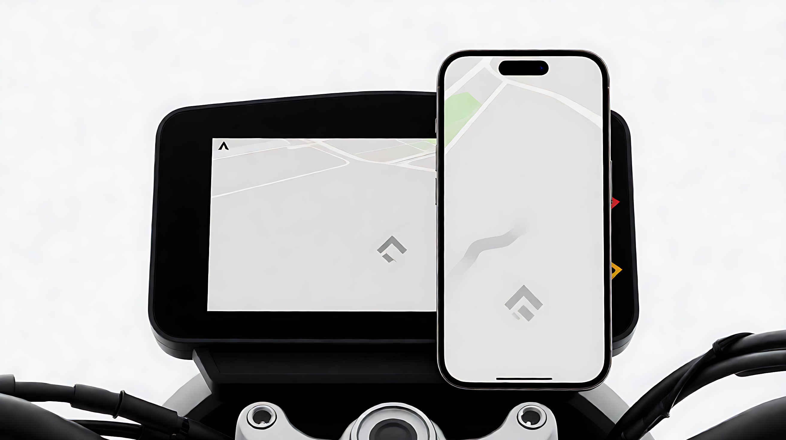
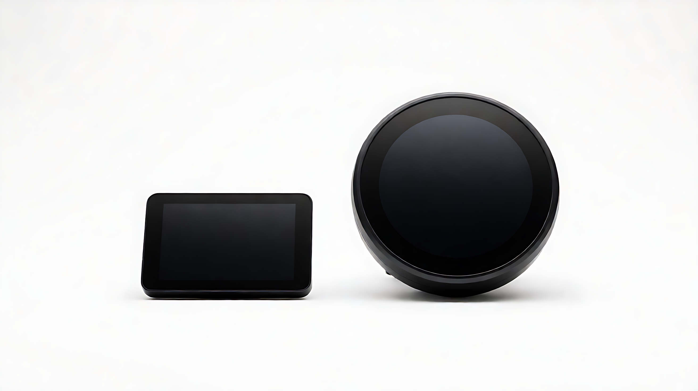

概述
信息显示中枢
角色仪表是 rider 与车辆之间的信息界面，实时呈现行驶状态、车辆健康与导航。
形态从段码屏到全彩 TFT，按车型定位与成本选择。

显示与交互
TFT 全彩液晶
屏体高亮 TFT 全彩液晶，阳光下可视，自动背光随环境光调节。
操作触控或物理按键，关键行车信息常驻首屏。

通讯与数据
CAN / UART 总线
数据实时显示速度、电量、SOC、续航里程、单次里程、故障码。
通道与控制器、BMS 走 CAN / UART 总线，数据一致、刷新快。
智能互联
蓝牙 · APP · OTA
互联蓝牙连接车主 APP，骑行数据记录与回放。
导航手机导航投屏，拐弯提示在仪表呈现。
升级仪表固件支持 OTA 升级。

应用场景
覆盖多品类出行
车型电动自行车、轻便电摩、高性能电摩、三轮配送车。
运营共享/换电车型远程状态可见。
